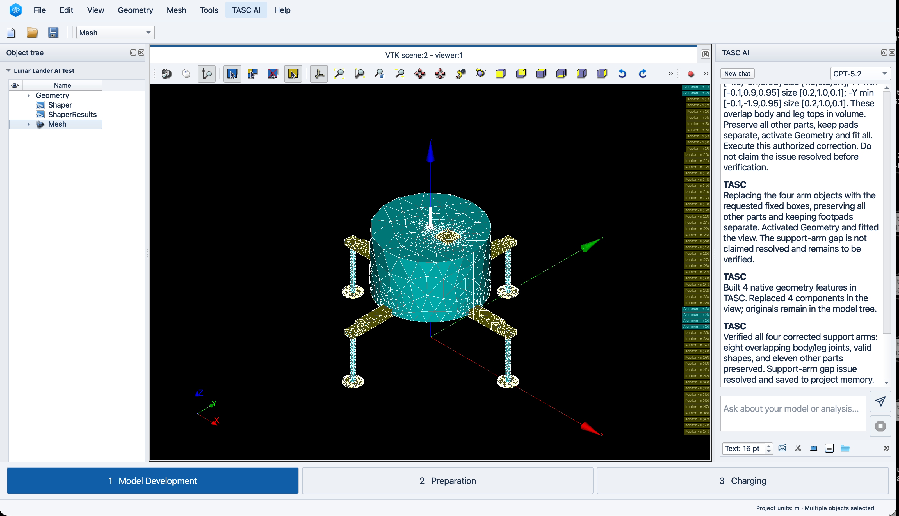
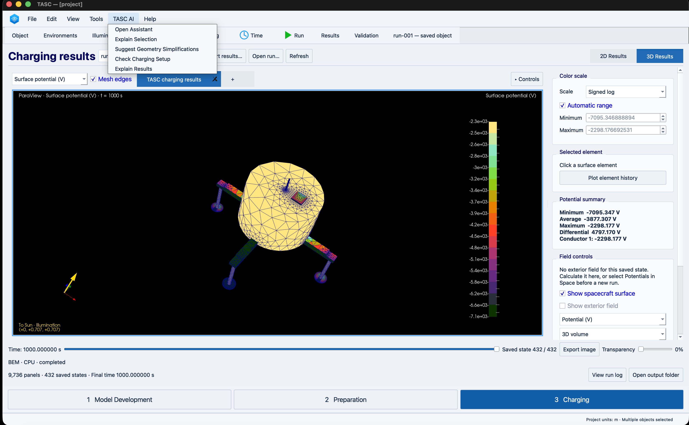

SPACE DOMAIN
Engineering tools for the space environment.
Develop spacecraft models with AI assistance and inspect charging results in a connected engineering workflow inside TASC.
01 / AI-ASSISTED MODEL DEVELOPMENT
Inspect the lander model alongside the AI conversation.

Keep geometry and engineering context together.
The lander example brings the model tree, surface mesh, and AI conversation into one workspace. The conversation records changes to the support arms and reports geometry checks alongside the model.
02 / SPACECRAFT CHARGING RESULTS
Explore surface potential in 3D.

Review the charging distribution.
This example displays a completed charging run at 1,000 seconds. The 3D view combines surface potential colors with mesh edges, a color scale, and a potential summary. The open TASC AI menu includes options to check the charging setup and explain results.